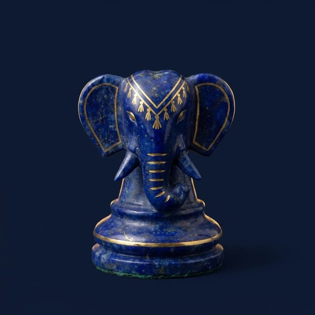

Çatrang: Sasaniler döneminde satranç
Oyun Hindistan’dan İran’a nasıl geldi, Buzurgmihr kimdir ve tavla neden satranca yanıttır.

Satranç üzerine en eski Fars eseri, Sasani çağının sonunda, VI–VII. yüzyıllarda yazıldığı düşünülen Orta Farsça «Çatrangın açıklaması ve nev-Erdeşir’in düzeni»dir. Onda Hint hükümdarının elçisi Şah I. Hüsrev Anûşirvân’a (531–579) armağanlarla gelir; aralarında çatrang — on altısı zümrütten, on altısı yakuttan taşlar — ve bir meydan okuma vardır: oyunu çözün ya da haraç ödeyin. Bilge Buzurgmihr kuralları bir günde çözer, karşılık olarak nev-Erdeşir’i, «soylu Erdeşir»i — sonradan tavla denecek zarlı oyunu — icat eder ve Hindistan’a götürür; orada kimse çözemez.
Bu bir rivayettir, ama asıl olanı söyler: İranlılar satrancın Hindistan’dan geldiğini hatırlıyor ve en baştan satranç ile tavlayı çift olarak yan yana tutuyordu — akıl oyunu ve kader oyunu. Elçilik öyküsünü Firdevsî 1010 dolaylarında «Şehnâme»de yineledi ve İranlı minyatürcüler yüzyıllarca «Buzurgmihr Hüsrev’e çatrangı gösteriyor»u çizdi.
Taşlar
Orta Farsça adlar bugün de tanınır: şah, ferzîn (danışman), pil (fil), asp (at), ruh ve payâdag (piyon). Araplar VII. yüzyılda İran’ı fethedince oyunu adlarıyla birlikte aldı: şah, firzân, fil, feres, ruh, beydak — ve «çatrang»dan «şatranç» sözcüğünü. Bizim «şah mat»ımız Farsça şah mât’tan gelir.
«Erdeşir’in İşleri Kitabı», ilk Sasani hükümdarı üstüne bir öykü, onu çatrang ustası olarak över. Bu III. yüzyıla tanıklık değildir — öykü efsanelerle doludur — ama yazıldığı dönemde oyunun İran’da olağan olduğunun sağlam bir işaretidir. Semerkant’ta bulunan Afrasiyab’ın yedi kemik taşı, VII–VIII. yüzyıllarda onun Amuderya’nın bu yakasında da oynandığını gösterir.